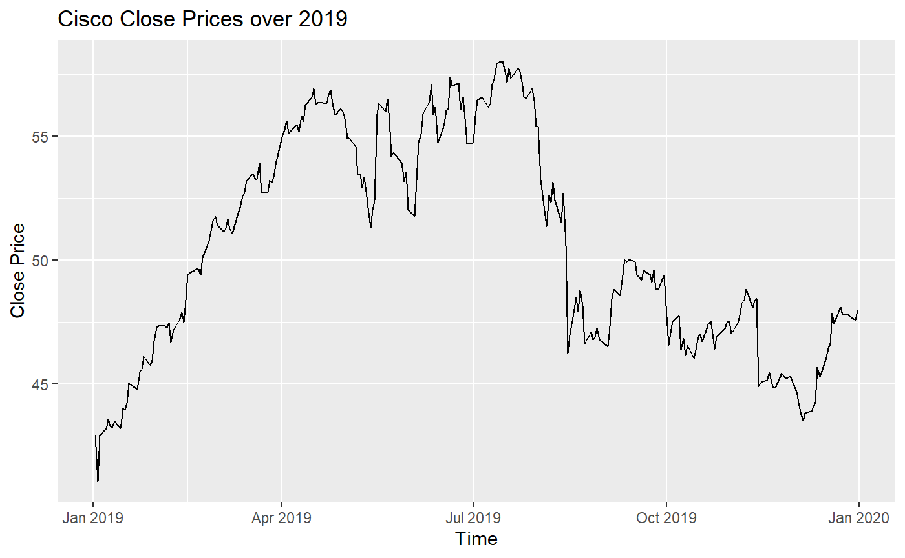

The purpose of rintrinio is to take the data from Intrinio and make it extraordinarily easy to move to a format for analysis in R.
This document introduces you to the functions included in this package.
The four functions in the package are as follows:
gather_financial_statement_time_series() to compare a single company’s financial statements over timegather_financial_statement_company_compare() to compare multiple company’s financial statements in a single periodgather_stock_time_series() to gather a time series of stock price informationgather_stock_returns() to gather returns of stocks over timegather_financial_statement_time_series()
gather_financial_statement_time_series() takes in information that would be spread across multiple lines when querying the Intrinio API directly, and puts it into a function that by default returns a dataframe that is ready to be used for analysis. This function should be used for time series analysis of financial statements (income statement, balance sheet, or cash flow statement).
For example, we can compare Apple’s 2018 and 2019 Q1 Balance Sheet:
time_series <- gather_financial_statement_time_series(api_key = api_key,
ticker = 'AAPL',
statement = 'balance_sheet_statement',
year = c("2018", "2019"), period = c('Q1'))
knitr::kable(time_series)| type | fin_value | fin_value. |
|---|---|---|
| ticker | AAPL | AAPL |
| statement | balance_sheet_statement | balance_sheet_statement |
| year | 2018 | 2019 |
| period | Q1 | Q1 |
| cashandequivalents | 2.7491e+10 | 4.4771e+10 |
| shortterminvestments | 4.9662e+10 | 4.1656e+10 |
| notereceivable | 2.7459e+10 | 1.8904e+10 |
| accountsreceivable | 2.344e+10 | 1.8077e+10 |
| netinventory | 4.421e+09 | 4.988e+09 |
| othercurrentassets | 1.1337e+10 | 1.2432e+10 |
| totalcurrentassets | 1.4381e+11 | 1.40828e+11 |
| netppe | 3.3679e+10 | 3.9597e+10 |
| longterminvestments | 2.07944e+11 | 1.58608e+11 |
| goodwill | 5.889e+09 | NA |
| intangibleassets | 2.149e+09 | NA |
| othernoncurrentassets | 1.3323e+10 | 3.4686e+10 |
| totalnoncurrentassets | 2.29305e+11 | 1.93294e+11 |
| totalassets | 4.06794e+11 | 3.73719e+11 |
| shorttermdebt | -1.8478e+10 | -2.1741e+10 |
| accountspayable | -6.2985e+10 | -4.4293e+10 |
| accruedexpenses | -2.6281e+10 | NA |
| currentdeferredrevenue | -8.044e+09 | -5.546e+09 |
| totalcurrentliabilities | -1.15788e+11 | -1.08283e+11 |
| longtermdebt | -1.03922e+11 | -9.2989e+10 |
| noncurrentdeferredrevenue | -3.131e+09 | NA |
| othernoncurrentliabilities | -4.3754e+10 | -5.4555e+10 |
| totalnoncurrentliabilities | -1.50807e+11 | -1.47544e+11 |
| totalliabilities | -2.66595e+11 | -2.55827e+11 |
| commitmentsandcontingencies | 0 | 0 |
| commonequity | -3.6447e+10 | -4.097e+10 |
| retainedearnings | -1.04593e+11 | -8.051e+10 |
| aoci | 8.41e+08 | 3.588e+09 |
| totalcommonequity | -1.40199e+11 | -1.17892e+11 |
| totalequity | -1.40199e+11 | -1.17892e+11 |
| totalequityandnoncontrollinginterests | -1.40199e+11 | -1.17892e+11 |
| totalliabilitiesandequity | -4.06794e+11 | -3.73719e+11 |
| othercurrentliabilities | NA | -3.6703e+10 |
gather_financial_statement_company_compare()
gather_financial_statement_company_compare() takes in information that would be spread across multiple lines when querying the Intrinio API directly, and puts it into a function that by default returns a dataframe that is ready to be used for analysis. This function should be used for cross-company analysis of financial statements (income statement, balance sheet, or cash flow statement).
For example, we can compare Apple and Cisco’s Income Statement results for Q1 of 2019:
company_compare <- gather_financial_statement_company_compare(api_key = api_key,
ticker = c("AAPL", "CSCO"),
statement = "income_statement",
year = "2019", period = "Q1")
knitr::kable(company_compare)| name | value.x | value.y |
|---|---|---|
| ticker | AAPL | CSCO |
| statement | income_statement | income_statement |
| year | 2019 | 2019 |
| period | Q1 | Q1 |
| operatingrevenue | -8.431e+10 | -1.3072e+10 |
| totalrevenue | -8.431e+10 | -1.3072e+10 |
| operatingcostofrevenue | 5.2279e+10 | 4.926e+09 |
| totalcostofrevenue | 5.2279e+10 | 4.926e+09 |
| totalgrossprofit | -3.2031e+10 | -8.146e+09 |
| sgaexpense | 4.783e+09 | 2.11e+08 |
| rdexpense | 3.902e+09 | 1.608e+09 |
| totaloperatingexpenses | 8.685e+09 | 4.341e+09 |
| totaloperatingincome | -2.3346e+10 | -3.805e+09 |
| otherincome | -5.6e+08 | 1.9e+07 |
| totalotherincome | -5.6e+08 | -1.04e+08 |
| totalpretaxincome | -2.3906e+10 | -3.909e+09 |
| incometaxexpense | 3.941e+09 | 3.6e+08 |
| netincomecontinuing | -1.9965e+10 | -3.549e+09 |
| netincome | -1.9965e+10 | -3.549e+09 |
| netincometocommon | -1.9965e+10 | -3.549e+09 |
| weightedavebasicsharesos | -4735820000 | -4.565e+09 |
| basiceps | -4.22 | -0.78 |
| weightedavedilutedsharesos | -4773252000 | -4.614e+09 |
| dilutedeps | -4.18 | -0.77 |
| weightedavebasicdilutedsharesos | -4.731e+09 | -4.55e+09 |
| basicdilutedeps | -4.22 | -0.78 |
| cashdividendspershare | -0.73 | -0.33 |
| marketingexpense | NA | 2.41e+09 |
| amortizationexpense | NA | 3.4e+07 |
| restructuringcharge | NA | 7.8e+07 |
| totalinterestexpense | NA | 2.21e+08 |
| totalinterestincome | NA | -3.44e+08 |
gather_stock_time_series()
gather_stock_time_series() is a function for simplifying time series analysis of stock prices of a single company. It takes in the ticker, start and end dates (optional), and an Intrinio API key, and returns a dataframe that can easily be plotted to view trend analysis, or analysed as is.
For example, we can see how Cisco’s close price changed over 2019 and model it with ggplot:
stock_data <- gather_stock_time_series(api_key = api_key,
ticker = "CSCO",
start_date = "2019-01-01",
end_date = "2019-12-31",
allow_max_rows = TRUE)
ggplot2::ggplot(data.frame("date" = stock_data[[1]],
"close" = stock_data['close']),
aes(date, close)) +
geom_line() +
ggtitle("Cisco Close Prices over 2019") +
labs(x = "Time", y = "Close Price")
gather_stock_returns()
gather_stock_returns() allows for a combination of looking at time series stock data and comparing returns across companies. This function allows effortless comparisons of returns across companies given a buy date and a sell date. Historical analysis is important for portfolio evaluations and comparisons.
For example, we can compare Apple and Cisco’s returns over Q1 2019:
stock_returns <- gather_stock_returns(api_key = api_key,
ticker = c("AAPL", "CSCO"),
buy_date = "2019-01-01",
sell_date = "2019-03-31")
knitr::kable(stock_returns)| Stock | Buy.date | Buy.price | Sell.date | Sell.price | Return…. |
|---|---|---|---|---|---|
| AAPL | 2019-01-02 | 155.2140 | 2019-03-29 | 187.4959 | 20.80 |
| CSCO | 2019-01-02 | 41.4651 | 2019-03-29 | 52.5269 | 26.68 |